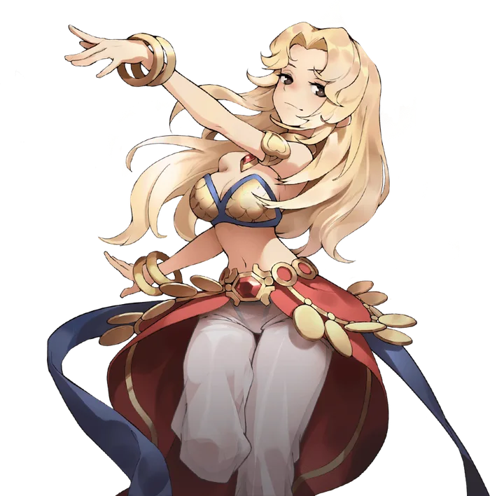

Third tier
Clown/Gypsy
Clown and Gypsy are the primary advancement option for Bards and Dancers. Unlike most third jobs, where the primary advancement option sticks close in theme and function to the original job, Clown and Gypsy both diverge quite significantly from the playstyle of Bard and Dancer. Content to rely on the supportive abilities of their 2nd job songs and dances, they turn their third job skill points towards more direct and focused intervention on the battlefield.
The first branch of skills for these classes will be more familiar to their 2nd job counterparts. Voluminous Volley and Ravaging Rainstorm provide a way to convert the user's Rhythm Level into physical damage, while Rhythmic Retort and Crushing Concerto do the same for magic damage.
The second branch of skills for these performers can itself be divided into two branches. These are the Tarot Card skills, divided evenly between supportive and offensive abilities.
The supportive Tarot Cards give the performer a variety of ways to enhance their allies. The Magician and Strength serve to increase their party members' magical and physical damage respectively. The High Priestess provides emergency healing, while the Lovers protects them from status effects. Finally, the ultimate culmination of this tree is the Wheel of Fortune, which consumes the user's Rhythm to reduce all of their currently active skill cooldowns.
Standing opposed to these are the offensive Tarot Cards. The Fool and the Hanged Man provide disruptive effects to halt the enemy's movement and skill use, while the Tower and the Devil inflict direct damage and status effects. These offensive skills are crowned by Death, which inflicts damage based on the user's Max HP that pierces all defenses for an exceptional burst of damage when needed most.
Unlike their previous classes, Clown and Gypsy gain access to an identical skill tree. Their only difference is the skills they inherit from their second job.

Where it sits
Skill list
Skills
Grouped the way the tree is grouped. Names, types and level caps come from the player wiki, so they match what you see in game.
Rhythm Skills4 skills
-
Voluminous VolleyPhysicalLv 10
Multi-hit volley scaling with Rhythm.
The user fires a volley of arrows at a distant target, hitting a number of times based on their Rhythm level for physical damage. If the user's Rhythm is at 0, the skill will miss.
-
Ravaging RainstormPhysicalLv 10
Consumes Rhythm to accelerate an arrow storm.
The user fires a volley of enchanted arrows to rain on a distant area, inflicting physical damage repeatedly to all targets within over time. The interval between hits is reduced by the user's Rhythm level, which is consumed on cast.
-
Rhythmic RetortMagicalLv 10
Magic pulse that tunes the user's Rhythm toward three.
The user fires a bolt of sound at a distance target, inflicting magic damage while altering their own Rhythm level. If the user's Rhythm level is below 3, it is increased by 1. If it's above 3, it is decreased by 1. If the user's rhythm level is exactly three, its duration is increased by 5 seconds.
-
Crushing ConcertoMagicalLv 10
Consumes Rhythm for a multi-hit sound wave.
Creates a powerful burst of sound, dealing devastating magical damage to all enemies in a small area. The amount of damage is based on the user's Rhythm level, which is consumed. If the user's Rhythm is 0, this skill will miss.
Supportive Tarot Cards5 skills
-
Tarot Card: The MagicianSupportLv 5
Adds flat MATK% to an ally's magic skills.
Bestows the blessing of the Magician on the targeted ally, increasing all damage dealt by their magical attacks for a short time. The duration of the buff is based on the Rhythm level of the user when it was applied.
-
Tarot Card: StrengthSupportLv 5
Adds flat ATK% to an ally's physical skills.
Bestows the blessing of Strength on the targeted ally, increasing all damage dealt by their Physical attacks for a short time. The duration of the buff is based on the Rhythm level of the user when it was applied.
-
Tarot Card: The High PriestessSupportLv 5
Auto-heals an ally the next few times they take damage.
Bestows the blessing of the High Priestess on the targeted ally, causing them to heal a small amount of life the next few times they would take damage. The amount healed is based on the user's Rhythm Level when the buff was applied.
-
Tarot Card: The LoversSupportLv 5
Cleanses statuses and grants temporary immunity.
Bestows the blessing of the Lovers on the targeted ally, curing them of numerous negative Statuses and shielding them from those statuses for a short time. The duration of the protective effect is based on the user's Rhythm Level when the buff was applied.
-
Tarot Card: Wheel of FortuneSupportLv 10
Consumes Rhythm to reduce all of the user's active cooldowns.
Bestows the blessing of the Wheel of Fortune on the user. Consumes the user's Rhythm Level to reduce all currently active skill cooldowns by a large amount. This skill only affects the caster, it cannot be used on other allies.
Offensive Tarot Cards5 skills
-
Tarot Card: The FoolOffensiveLv 5
Curses an enemy's skills with a chance to fail.
Bestows the curse of the Fool on the targeted enemy. For a short duration, skills cast by that enemy have a chance to fail. The failure chance is based on the user's Rhythm Level when the debuff was applied. The debuff will persist until either a skill fails, or the max duration is reached.
-
Tarot Card: The Hanged ManOffensiveLv 5
Rhythm-scaled disable: Slow, Immobilize, or Stun.
Bestows the curse of the Hanged Man on the targeted enemy, inflicting various disabling statuses based on the user's Rhythm Level.
1~2: Slow
3~4: Immobilize
5: Stun
-
Tarot Card: The TowerOffensiveLv 5
Multi-hit arrow-property burst scaling with Rhythm.
Inflicts Hybrid damage on the targeted enemy based on the user's Rhythm Level. The damage takes the property of the user's equipped arrow. If the user's Rhythm Level is zero, this skill will miss.
-
Tarot Card: The DevilOffensiveLv 5
Delayed explosion with Rhythm-scaled severe statuses.
Bestows the curse of the Devil on the targeted enemy. After a short delay, the target explodes, dealing hybrid damage and inflicting various status effects to all enemies in the area based on the user's Rhythm Level at the time the debuff was applied.
1~2: Severe Burning
3~4: Deadly Poison
5: Internal Bleeding
-
Tarot Card: DeathOffensiveLv 10
Max-HP-based burst that pierces all defenses.
Consumes the user's Rhythm level to inflict direct damage on a single target proportional to the user's Max HP. The damage dealt by this skill is neither physical nor magical. The HP to Damage ratio of this skill is determined by the user's Rhythm Level.
From the players
See it played
No videos for this class yet. Record your gameplay and post it in the Discord.
Come find out what changed
Make an account now, grab the client, and be there when the servers go up.